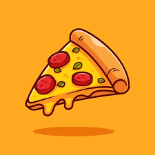

As Melhores Pizzas De São Paulo

São mais de Quatro Décadas recheadas de Tradição, passada de Geração a
Geração,
não é por Capricho que chegamos aqui, depois de tanta luta,
nos
tornamos os maiores em São Paulo.
nós começamos lá em 1958, no Centro de Guarulhos, não tinhamos nenhum
empregado,
era apenas nossa família em uma grande aposta, meu avô tinha o dom na
cozinha,
fazia pizza na familia como ninguém, após tantos elogios e falta de
emprego na época,
decidiu construir uma pizzaria com o dinheiro, que tinha guardado, da
Fazenda.